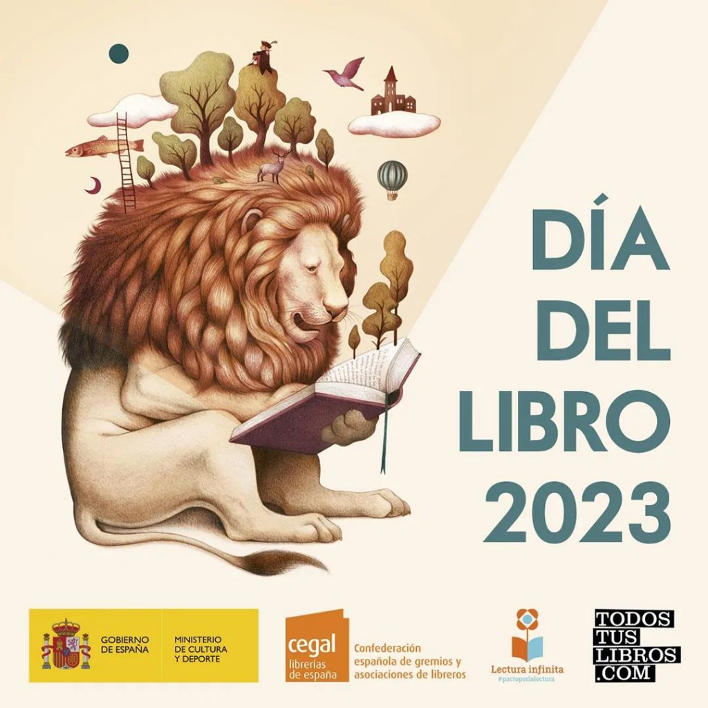

El Día del Libro en España se celebra cada año el 23 de abril. Esta fecha se eligió porque coincide con el fallecimiento de dos grandes escritores de la literatura universal: Miguel de Cervantes y William Shakespeare. La celebración del Día del Libro en España se remonta a 1926, cuando el escritor valenciano Vicente Clavel propuso la idea de celebrar un día dedicado al libro. En 1930, la iniciativa fue acogida por el rey Alfonso XIII, quien firmó el Real Decreto por el que se instituía oficialmente el Día del Libro. Desde entonces, la celebración del Día del Libro se ha convertido en una tradición muy arraigada en España. En este día, se organizan multitud de actividades relacionadas con la lectura y la literatura, como ferias del libro, recitales poéticos, presentaciones de libros, lecturas públicas, entre otras. También es una fecha importante para regalar libros y fomentar la cultura de la lectura en la sociedad.
A continuación se muestran unas actividades que pueden realizarse con niños y niñas de entre 3 y 14 años dividas por grupos de edad.